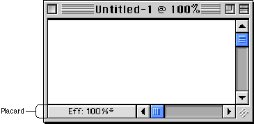

Placards
A placard is a control that you can use as an information display or as background fill for a control area. Placards have three states: normal, pressed, and disabled.Perhaps the most familiar use of the placard control is as a small information panel, often placed at the bottom of a window to the left of the horizontal scroll bar. Figure 2-35 shows an example of this use of a placard.
Figure 2-35 A placard used to report information to the user

You can extend the functionality of a placard. Providing a pop-up menu, for instance, would give the user a convenient way to choose the magnification level of the window.